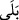

et-Te’vîlâtü’n-Necmiyye’de şöyle der: Biz insana onu ortaklık kapsamından çıkaran
bir şeref bahşettik. Bu şereflendirme, biri rûhânî diğeri cismânî olmak üzere iki şekilde
olur. Cismânî olanı geneldir; o konuda müslüman ve kâfir eşittir. Bu onun hamurunun
kırk sabah Allah tarafından kendi elleriyle yoğurulması, ona ana rahminde bizzat şekil
vermesi ve onu en güzel sûrette ve ölçülü bir şekilde yaratması, onu sırat-ı müstakîmde
boynu dik olarak düzgün bir şekilde yürütmesi, elleriyle tutan, parmaklarıyla yiyen,
sakal ve saçlarla süslenmiş çeşit çeşit sanatları icra eden bir varlık olarak yaratmasıdır.
Rûhânî şereflendirme ise özel ve genel olmak üzere iki kısımdır. Genel olanında
müslüman ve kâfir yine eşittir. Bunları şöyle saymak mümkündür: Allah ona kendi
rûhundan üflemiş, ona bütün isimleri öğretmiş, onu henüz yaratmadan önce “Ben sizin
rabbiniz değil miyim?” sözüyle onunla konuşmuş, ona hitabını işittirmiş ve “
Evet,
sen bizim rabbimizsin” sözüyle ona cevab verdirmiş, kulluk üzerine ondan ahid/söz
almış, onu fıtrat üzere dünyaya getirtmiş, kendisine peygamberler göndermiş, kitaplar
indirmiş, onu huzuruna çağırmış, cennetle müjdeleyip ateşle korkutmuş, ona deliller ve
mûcizeler göstermiştir.
Özel rûhani şereflendirme ise Allah’ın nebîleri, rasulleri, velîleri ve mü’min
kullarına bahşettiği nebilik, rasullük, velîlik, îman, islâm, Allah’ın yolu olan sırat-ı
müstakîme ulaştırma, makamlardan geçerken Allah’a, Allah’ta ve Allah’la seyr
(yürümek), lâhûtî cezbelerle insanlığı aşmak, enâniyyetin/benliğin yok oluşu/fenâsı ve
hüviyyetin bekası sırasında ilâhî ahlâkla ahlaklanmaktır.
İmam
Kuşeyrî
şöyle
buyurmuştur:
“Âyetteki
“İnsanoğlu”ndan
murad,
Âdemoğullarından mü’min olanlardır, Kur’an nassı kâfirleri ne münâsebetle zikretsin.
“Allah kimi hor ve hakir kılarsa, artık onu değerli kılacak bir kimse yoktur.” (el-
Hacc, 22/18) Yüceltmekten kâfirlerin nasîbi yoktur. Mü’minlerin mükerremliği,
zâhirlerinin mücâhedelere muvaffak kılınmakla bezenmiş olması, bâtınlarının ise
müşâhedelerin hakîkatine ererek münevver olmasıyladır.”
Nitekim Bahru’l-ulûm’da şöyle der: Bize zâhir olan onların îman ve sâlih amelle
şereflendirilmiş olmasıdır. Bunun delili de Hz. Peygamber (s.a.)’in şu hadîsidir: “Bir
adamın eşini ve çocuğunu tanıması gibi mü’min de semâda öylece tanınır. O Allah
katında mukarreb (Allah’a yakın kılınmış) melekten daha değerlidir.”[118]
Muhammed b. Ka‘b (r.a.) şöyle der: “İnsanların şan ve şeref sâhibi olması, Hz.
Muhammed (s.a.) onlardan olduğu içindir.”
Ey Âdem âilesinin şerefi sensin
Âlemin gözünün nûru sensin
Bu hânede senin cemâatin olmayan kimdir?
Bu sofrada senin tufeylin olmayan kimdir?
‘Elest’e senden salâ gelmiş olmasaydı
Varlık misafirliğine gelmiş yoktu.